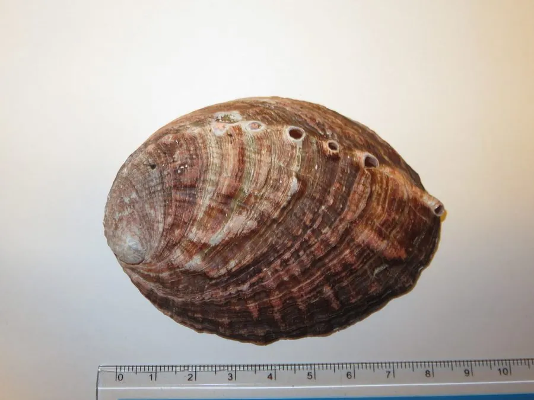

软体动物 · 动物界
盘鲍 Haliotis discus

壳形扁圆、壳面有呼水孔的大型鲍，足部肥厚，肉味鲜美，是中国北方重要的养殖与食用鲍类，俗称鲍鱼。
- 分类
- 门软体动物门纲腹足纲目原始腹足目科鲍科属鲍属
- 栖息环境
- 岩礁海岸潮间带下区至水深数十米，水流畅通的礁石
- 地理分布
- 西北太平洋，包括中国黄海、渤海，日本和朝鲜半岛
- 保护级别
- 尚无保护级别；野生种群受采捕和栖息地退化影响
物种志
盘鲍的贝壳呈椭圆形，壳长约十至二十厘米，壳面粗糙，呈绿褐至暗褐色，有细密的生长纹和放射状隆起，壳上有一列三至五个凸起的呼水孔，孔口开张，壳内面有明亮的珍珠光泽，呈银白色带绿彩。足部肥厚，吸力很强，能紧紧吸附在岩礁上。它的外套膜边缘生有许多小触手，从壳缘下方伸出，用来感知水流和敌害。壳形扁平宽大，盘鲍之名由此而来。
它分布于西北太平洋，包括中国黄海、渤海、日本和朝鲜半岛，栖息在岩礁海岸的潮间带下区至水深数十米，喜欢水流畅通、藻类繁茂的礁石。它昼伏夜出，用齿舌刮食附着在岩石上的硅藻和大型藻类，以海带、裙带菜为主。繁殖期在秋季，雌雄异体，受精卵在海水中发育，幼虫经浮游阶段后附着到礁石上。盘鲍是中国北方重要的养殖鲍类，肉味鲜美，壳可入药，目前尚无保护级别，野生种群受采捕和栖息地退化影响。
形态与习性
- 食性刮食硅藻和大型藻类，以海带为主
- 壳长约十至二十厘米，壳面有呼水孔
- 足部肥厚有力，能紧吸岩礁
- 栖息深度潮间带下区至水深数十米
- 繁殖秋季繁殖，幼虫经浮游期后附着礁石
- 利用北方重要养殖鲍，肉可食，壳可入药
趣味知识
- 盘鲍壳上那排小孔是呼水孔，海水从孔中进出，帮助它呼吸和排出废物。
- 它夜里才出来吃海带，白天用足部紧紧吸在礁缝里，很难被拽下来。
- 鲍壳内面的珍珠层色彩斑斓，是制作螺钿镶嵌和纽扣的原料。